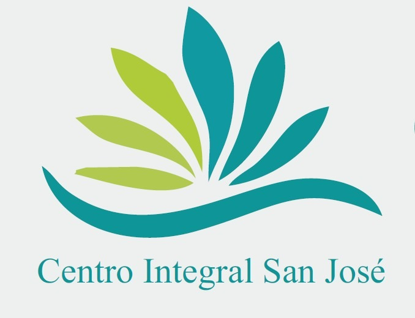

Un centro médico de la comunidad en el corazón de Maipú, con un servicio cercano, confiable y accesible para ti y tu familia.
Reserva: (2) 2996 8723Diferentes especialidades en un solo lugar, para una atención integral de cada paciente.
Servicio de masofilaxia y estética corporal dentro del centro.
Trabajo serio e individualizado con cada paciente. Consulta los valores por teléfono o correo.
Arrienda un box por horas, por jornada o bajo un esquema de porcentaje, y adapta el espacio a tu ritmo de trabajo.
Llámanos o escríbenos, o pasa a conocernos cuando quieras.